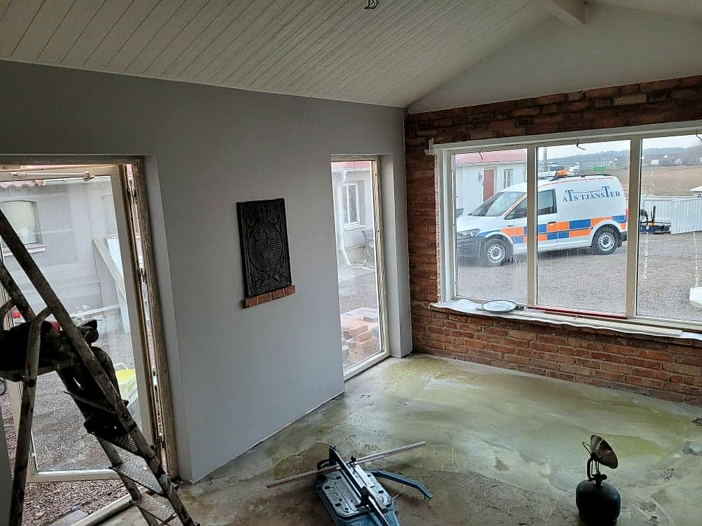

Remonty, płytki i tarasy we Włocławku
Wykończenia wnętrz, płytki na ścianach i schodach, tarasy z płyt i z drewna. Firma działa od 2018 roku, a każde zlecenie zaczynam od oględzin na miejscu.
Zadzwoń teraz +48 793 049 506- Oględziny przed wyceną
- Cały remont albo jeden etap
- Włocławek i okolice
Najczęstsze zlecenia
Większość telefonów to jedna z tych spraw. Twojej nie ma na liście? Zadzwoń i opisz, co trzeba zrobić.

Wiesz, na czym stoisz - na każdym etapie
Od pierwszego telefonu do odbioru roboty - krok po kroku.
- 01
Telefon
Dzwonisz i mówisz, co chcesz zrobić. Umawiamy termin oględzin.
- 02
Oględziny
Przyjeżdżam na miejsce, mierzę i ustalamy zakres prac.
- 03
Wycena
Dostajesz wycenę i termin startu, zanim cokolwiek zacznę.
- 04
Praca i odbiór
Robię ustalony zakres, a na koniec oglądamy wszystko razem.
Moje realizacje
Płytki, schody, tarasy i wykończone wnętrza. Pierwsze kadry to zdjęcia z moich zleceń.




Co robię
Czym zajmuję się na co dzień - z krótkim opisem.
- Wykończenia wnętrzMieszkanie albo dom od surowych ścian do gotowego wnętrza. Kolejność prac ustawiam tak, żeby mokre etapy zdążyły wyschnąć.Wycena →
- Układanie płytekPłytki na ścianach i podłogach, także duże formaty. Poziomuję na klinach, żeby fugi szły równo, a krawędzie się nie mijały.Wycena →
- Schody zewnętrzneSchody przed wejściem obłożone płytkami, z równymi stopniami i spadkiem, żeby woda nie stała.Wycena →
- Tarasy z płytTaras przy domu na nowym podłożu: hydroizolacja, obróbka krawędzi i płyty ułożone ze spadkiem.Wycena →
- Tarasy z drewnaDrewniany taras na legarach, z agrowłókniną pod spodem, żeby nie przerastał chwastami.Wycena →
- Remonty mieszkańSkucie, przeróbki ścian, tynki i gładzie, malowanie. Mieszkanie z rynku wtórnego doprowadzone do porządku.Wycena →
Co mówią klienci
Polecam rzetelnieBernard Przybyła
Dojeżdżamy do Ciebie
Firma jest we Włocławku i tu robię większość zleceń. Mieszkasz poza miastem? Zadzwoń i podaj miejscowość, powiem, czy dojadę.
- Włocławek
- + okolice
Planujesz remont albo taras?
Zadzwoń, umówimy termin oględzin. Cenę poznasz przed robotą, nie po niej.